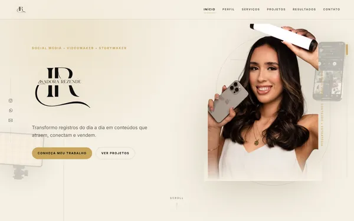
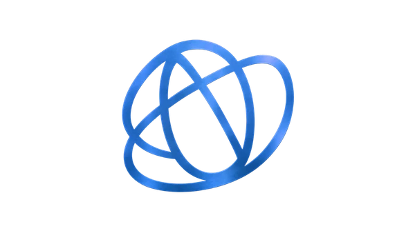
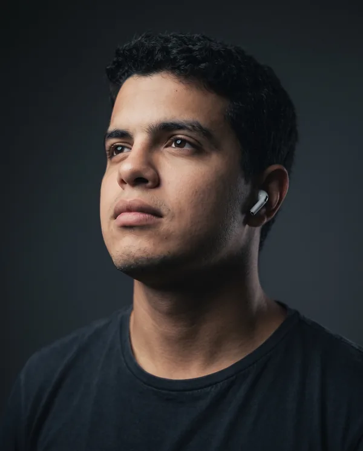

Niobio Sites, SEO e IA.
A Niobio é uma empresa de tecnologia e marketing digital que cria sites, cuida do SEO e usa inteligência artificial para colocar a sua marca na frente de quem já está procurando o que você vende. Planejamos a presença digital da sua empresa do início ao fim, para que cada visita ao seu site tenha chance real de virar cliente.

Quem somos?

Quem está por trás da Niobio: especialista em desenvolvimento web, SEO e inteligência artificial
Quando você fecha com a Niobio, quem cuida do seu projeto de marketing digital é Lucas Rodrigues Batista, o fundador. Lucas é certificado em Python, JavaScript, SEO e IA generativa, com foco principal no Claude, da Anthropic.
Na prática, a pessoa que faz a criação do seu site também sabe otimizá-lo para o Google, para que ele apareça quando alguém procura o que você vende. E sabe quais tarefas da sua rotina a inteligência artificial pode automatizar. Você fala com quem entende de desenvolvimento web e posicionamento online do começo ao fim, sem intermediários e sem ter que repetir a mesma explicação para três pessoas diferentes.
- Python
- JavaScript
- SEO
- IA generativa
Projetos
Sites que já estão no ar. Abra e navegue por eles.
Planos de assinatura de SEO
Valores mensais. Escolha um ponto de partida e conversamos sobre o que faz sentido para a sua empresa.
Por que contratar a Niobio para o seu site e o seu marketing digital
- Site bonito que ninguém encontra não traz cliente. Na Niobio, quem cria o seu site também cuida do SEO. Tudo já nasce pronto para aparecer no Google e para transformar visita em contato. Você não precisa de uma empresa para o site, outra para as redes e ninguém conversando entre si.
- Uma pessoa responsável, do começo ao fim. Você fala direto com o Lucas, o fundador, certificado em Python, JavaScript, SEO e IA generativa. Sem intermediários e sem repetir o mesmo briefing três vezes.
- IA que devolve o seu tempo. Usamos o Claude todos os dias para acelerar a produção de conteúdo, o atendimento ao cliente e a análise de informações. Você ganha horas para cuidar do que só você faz pela sua empresa.
- Cada decisão tem um motivo. Antes de publicar, definimos quem é o seu cliente e onde você quer chegar. Você acompanha o porquê de cada passo, sem surpresas.
- Para quem está começando e para quem já está na internet. Se a sua marca ainda não tem presença digital, começamos do jeito certo. Se ela já existe, mas está espalhada, organizamos para que cada canal trabalhe a favor das suas vendas.
-
Conte o que você quer alcançar. Na primeira conversa, entendemos o seu negócio e você sai sabendo qual é o próximo passo. Sem pressão para fechar nada.
Falar com a Niobio no WhatsApp (abre em nova aba)
Contato
Escolha o canal mais confortável para você.
Você imagina. A Niobio transforma em resultado.